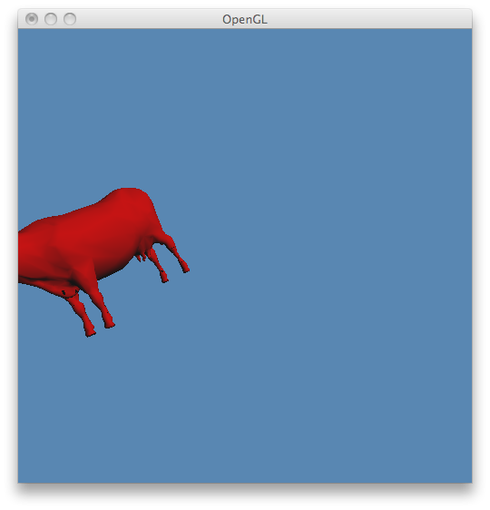
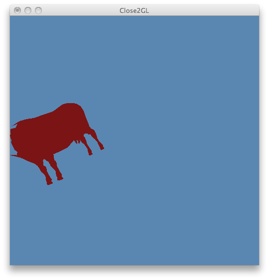
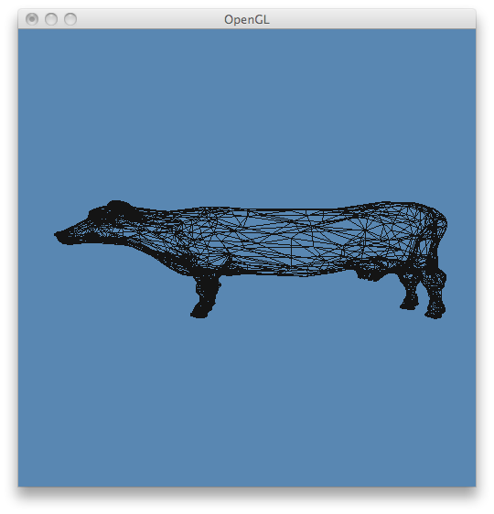
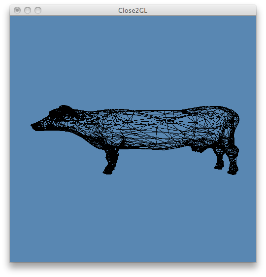
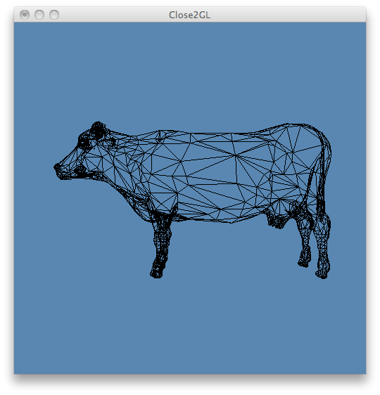
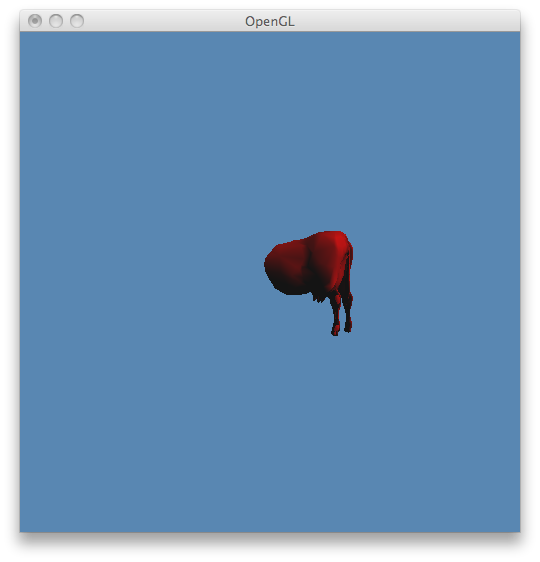
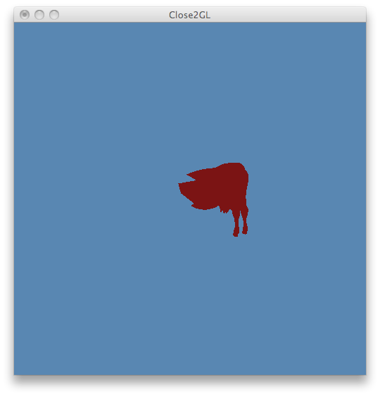

Trabalho de Implementação 2
Ambiente de Desenvolvimento
- Mac OS X (v10.6.6)
- gcc 4.2.1
Desenvolvimento
ModelView Matrix
A Listagem 1 apresenta o código utilizado para a transformação da ModelView Matrix, onde:
- camera->v é o vetor Up da câmera;
- camera->n é o vetor LookAt da câmera;
- camera->u é um vetor unitário ortogonal aos vetores V e N; e
- camera->position é o vetor que define a posição da câmera em relação à origem do WCS.
void set_modelview_matrix()
{
modelview = new matrix4x4f(
camera->u.x, camera->u.y, camera->u.z, -dotProduct(camera->position, camera->u),
camera->v.x, camera->v.y, camera->v.z, -dotProduct(camera->position, camera->v),
camera->n.x, camera->n.y, camera->n.z, -dotProduct(camera->position, camera->n),
0.0, 0.0, 0.0, 1.0);
}
Listagem 1 - Código para ModelView Matrix
Projection Matrix
A Listagem 2 apresenta o código utilizado para a transformação da Projection Matrix, onde:
- a é a relação de aspecto entre o FOV vertical e horizontal da câmera;
- n é o Near Clipping Plane; e
- f é o Far Clipping Plane.
void set_projection_matrix(float a, float n, float f)
{
float t = n * tan((camera->vFov / 2.0) * (3.141592654 / 180.0));
float r = t * a;
float b = -t;
float l = -r;
float w = r - l;
float h = t - b;
float d = f - n;
projection = new matrix4x4f(
(2.0 * n) / w, 0.0, (r + l) / w, 0.0,
0.0, (2.0 * n) / h, (t + b) / h, 0.0,
0.0, 0.0, -(f + n) / d, -(2.0 * f * n) / d,
0.0, 0.0, -1.0, 0.0);
}
Listagem 2 - Código para Projection Matrix
Backface Culling
A Listagem 3 apresenta o código utilizado para o cálculo do Backface Culling. A conta é simples:
- Determina-se dois vetores b0 e b1 a partir das coordenadas do triángulo (v0, v1 e v2);
- Calcula-se o produto vetorial entre b0 e b1 para obter a normal ao plano formado pelos dois vetores;
- Calcula-se o produto escalar entre o vetor do passo 2 e o vetor que representa o olho da câmera;
- Se o resultado do passo 3 for positivo (ou negativo, em caso de ordenação CCW dos vértices do triângulo), isso significa que a face frontal do triângulo está "de costas" para a câmera. Portanto, exclui-se o triângulo da renderização.
bool cull = false;
if (opt.backface_culling) {
vector3f b0(v0[0] - v1[0], v0[1] - v1[1], v0[2] - v1[2]);
vector3f b1(v0[0] - v2[0], v0[1] - v2[1], v0[2] - v2[2]);
cull = dotProduct(camera->position - camera->n, crossProduct(b0, b1)) > 0;
if (opt.ccw) cull = !cull;
}
Listagem 3 - Código para Backface Culling
Clipping
A Listagem 4 apresenta o código utilizado para realizar clipping de triângulos. Se o triângulo não foi cortado pelo processo de Backface Culling e está totalmente dentro da área de desenho (compara-se o módulo das coordenadas X, Y e Z com o módulo da coordenada W), ele será desenhado.
if (!cull &&
abs(v0[0]) <= abs(v0[3]) && abs(v0[1]) <= abs(v0[3]) && abs(v0[2]) <= abs(v0[3]) &&
abs(v1[0]) <= abs(v1[3]) && abs(v1[1]) <= abs(v1[3]) && abs(v1[2]) <= abs(v1[3]) &&
abs(v2[0]) <= abs(v2[3]) && abs(v2[1]) <= abs(v2[3]) && abs(v2[2]) <= abs(v2[3])) {
// draw triangle...
}
Listagem 4 - Código para Culling
Divisão Perspectiva
A Listagem 5 apresenta o código utilizado para realizar a divisão perspectiva, que consiste apenas em dividir todas as coordenadas dos vértices do triângulo pela coordenada W dos mesmos.
v0[0] = v0[0] / v0[3];
v0[1] = v0[1] / v0[3];
v0[2] = v0[2] / v0[3];
v1[0] = v1[0] / v1[3];
v1[1] = v1[1] / v1[3];
v1[2] = v1[2] / v1[3];
v2[0] = v2[0] / v2[3];
v2[1] = v2[1] / v2[3];
v2[2] = v2[2] / v2[3];
Listagem 5 - Código para Divisão Perspectiva
Viewport Matrix
A Listagem 6 apresenta o código utilizado para realizar a transformação da Viewport Matrix, onde:
- lv é o canto esquerdo da janela;
- rv é o canto direito da janela;
- bv é o canto inferior da janela; e
- tv é o canto superior da janela.
void set_viewport_matrix(float lv, float rv, float bv, float tv)
{
viewport = new matrix4x4f(
(rv - lv) / 2.0, 0.0, 0.0, (lv + rv) / 2.0,
0.0, (tv - bv) / 2.0, 0.0, (bv + tv) / 2.0,
0.0, 0.0, 1.0, 0.0,
0.0, 0.0, 0.0, 1.0);
}
Listagem 6 - Código para Viewport Matrix
Resultados

Comparação 1 - Sincronização das duas janelas, cores, clipping (em Close2GL), movimentação da câmera.

Comparação 2 - Mudanção de vFov e hFov da câmera e Backface Culling desativado.

Comparação 3 - Backface Culling ativado.

Comparação 4 - Far clipping plane em ação.